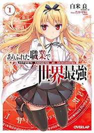
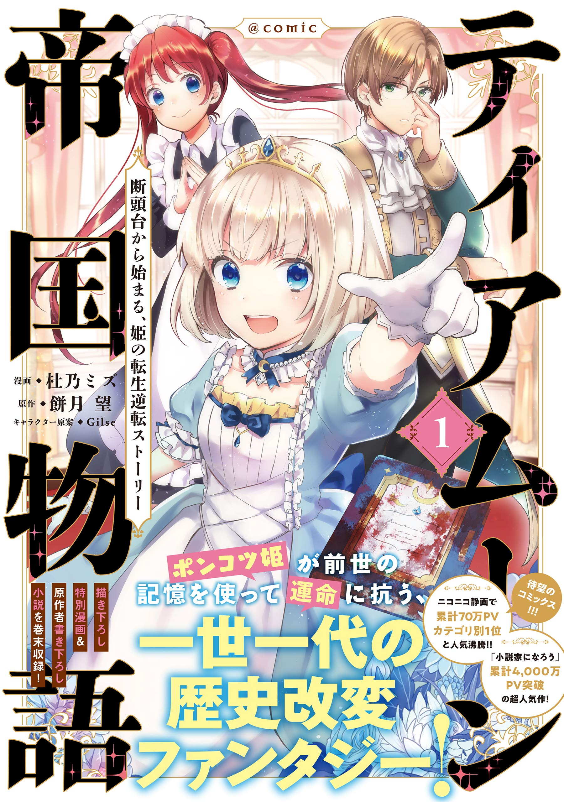
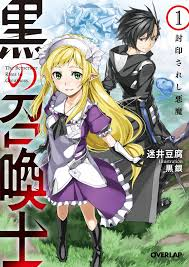

【連載中】小説家になろう作品
- ありふれた職業で世界最強
- ティアムーン帝国物語 ～断頭台から始まる、姫の転生逆転ストーリー～
- 黒の召喚士 ～戦闘狂の成り上がり～
ありふれた職業で世界最強

- あらすじ
-
クラスごと異世界に召喚され、他のクラスメイトがチートなスペックと“天職”を有する中、一人平凡を地で行く主人公南雲ハジメ。彼の“天職”は“錬成師”、言い換えればただの鍛治職だった。最弱の彼は、クラスメイトにより奈落の底に落とされる。必死に生き足掻き、気がつけば世界最強・・・
- 感想
-
クラス全員が異世界へ召喚。主人公が手にしたのは、ありふれた職業錬成師でした。逆恨みから死にかけた主人公は、ある出来事をきっかけに最強へ至る道を歩みはじめる。
主人公は最初から強いわけではなく、むしろ弱い、そこから生きるために強くなっていく姿がかっこいい。
中二ワールド全開で、テンプレの味わい深さを120パーセント楽しめる。目には目を歯には歯をを地でいくかっこよさ。この最強には納得せざるをえない。
topに戻る
ティアムーン帝国物語 ～断頭台から始まる、姫の転生逆転ストーリー～

- あらすじ
- 「なぜ、こんなことに……？」
大国ティアムーン帝国の皇女、ミーア・ルーナ・ティアムーンは断頭台(ギロチン)の上でつぶやく。
彼女を取り囲む観衆の顔には、例外なく怒りの色があった。
重税に耐えかねた民衆の革命、その手にかかって、ミーアは断頭台で処刑されてしまう。
けれど次に目が覚めた時、彼女はベッドの上に寝ていた。
八年も前、まだ子どもだった頃の姿で……。
一瞬、夢か？ と安心しかけるミーアだったのだが、その枕元には彼女自身が綴った血染めの日記帳が転がっていた。
豪奢な皇女の部屋に、ミーアのあられもない悲鳴が響いた。
これは、やり直しの物語。
それほど悪辣ではなかったけれど、他人の痛みにも空腹にも思いを致すことができなくて……それを知った時にはすべてが手遅れだった姫殿下。過去の自分へと逆行転生した彼女は、血染めの日記帳と自らの記憶をもとに、西へ東へ奔走する。
斜陽の帝国の未来を救うため？
内戦により命を落とす多くの兵士のため？
民衆を飢饉から救うため？
否、彼女の目的はただ一つ。
「すべてはギロチンの運命を回避するために！」
- 感想
-
この作品は、処刑されてしまうほどの我儘の限りを尽くして生きてきた主人公が幼い頃の自分に転生して、今度は処刑されないように生きていくという物語。
この作品の面白いところは転生した後のミーア姫はあくまでも自分ファーストな我儘皇女様のままという所。
それでは断頭台は回避できないのではないかと思われるかもしれないが、そういうわけではなく、全てが言動が断頭台の回避の、如いては自分のためのものになっているので、結果的に人格者のような言動に見えてしまう、そういったすれ違いが面白い。
topに戻る
黒の召喚士 ～戦闘狂の成り上がり～

- あらすじ
-
記憶を無くした主人公が召喚術を駆使し、成り上がっていく異世界転生物語。主人公は名前をケルヴィンと変えて転生し、コツコツとレベルを上げ、スキルを会得し配下を増やしていく。そして、気が付いた時には圧倒的な力を手に入れていた。そんなケルヴィンの向かう先にあるものは……？
- 感想
-
この作品の主人公は召喚士という後衛職、配下を駆使して戦う職業であるはずなのに自分から前に出て戦うそんな常識はずれな主人公は、戦闘狂ではあるが、魅力的で大変面白い作品だった。
topに戻る